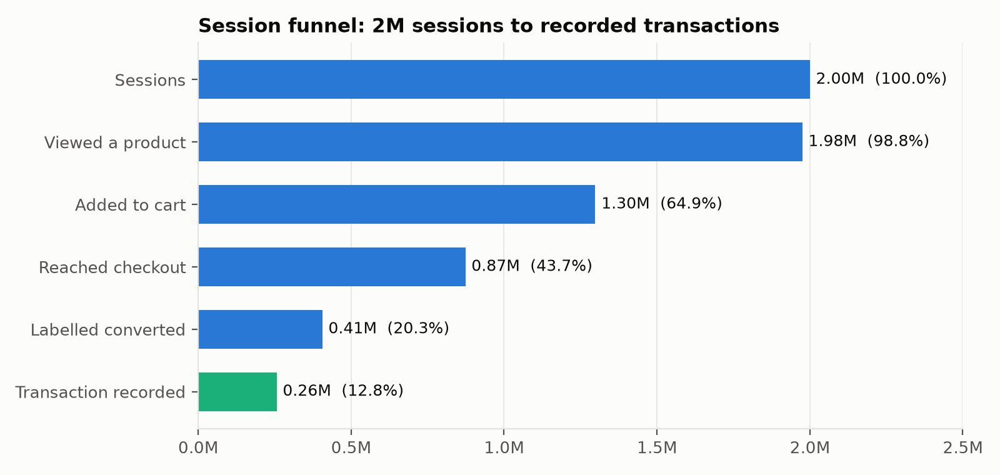
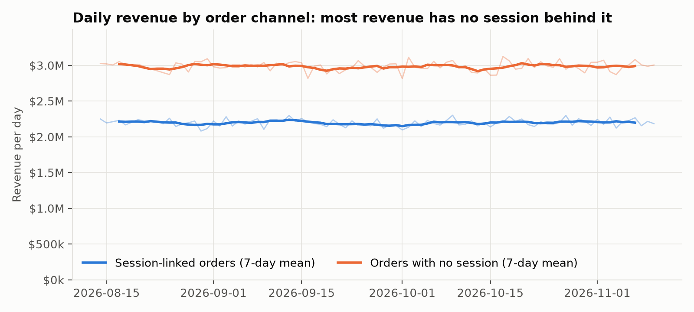
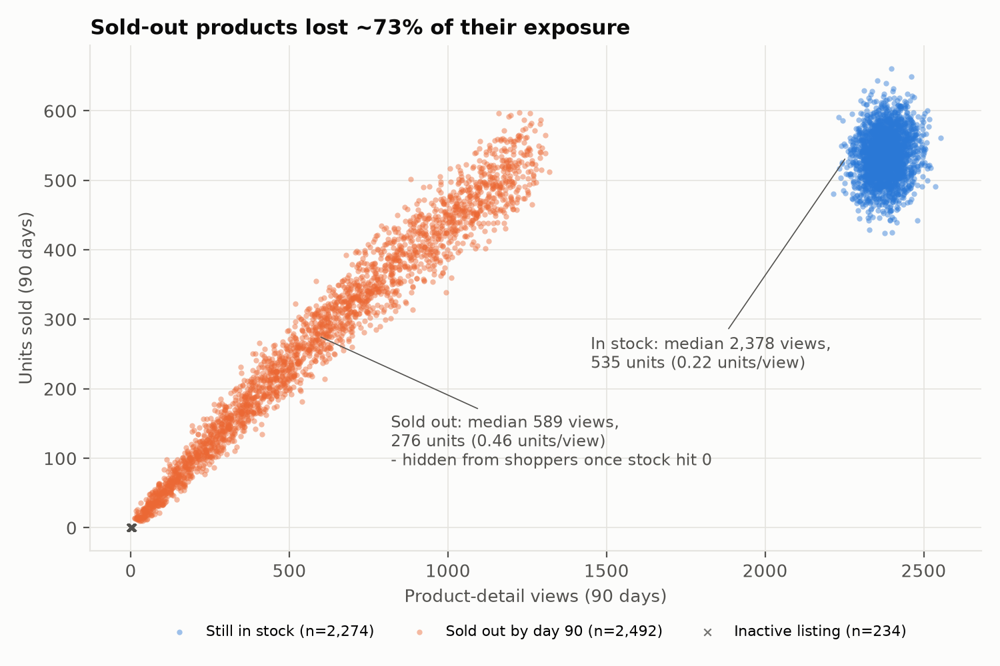
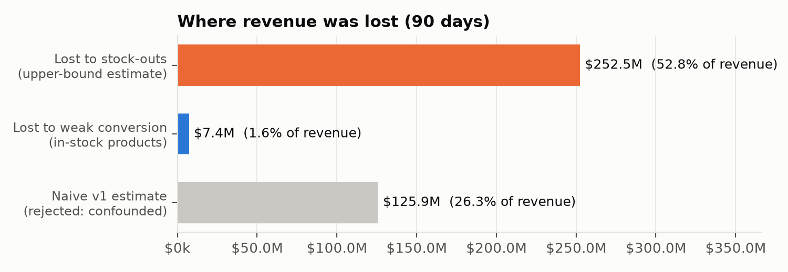
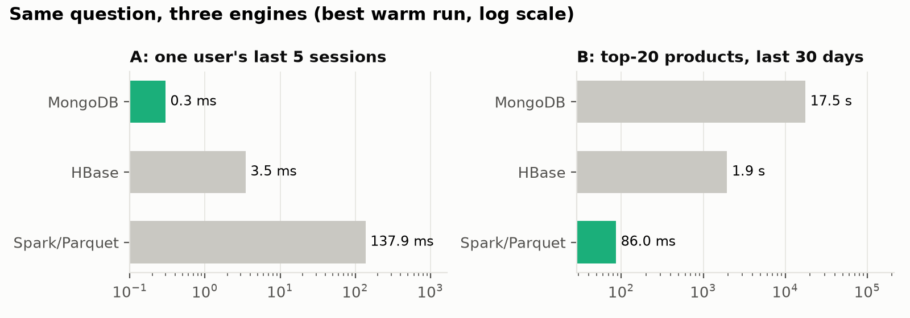
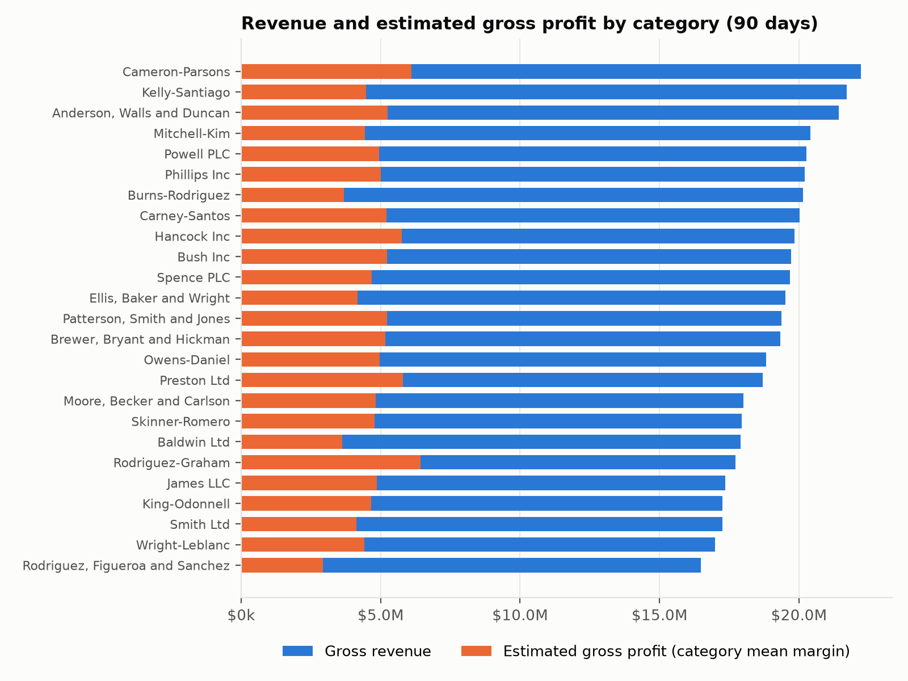
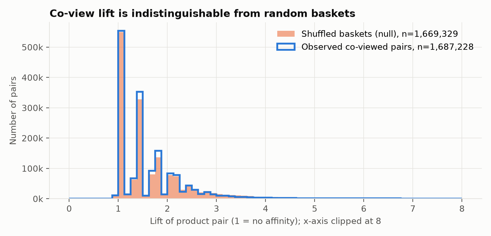
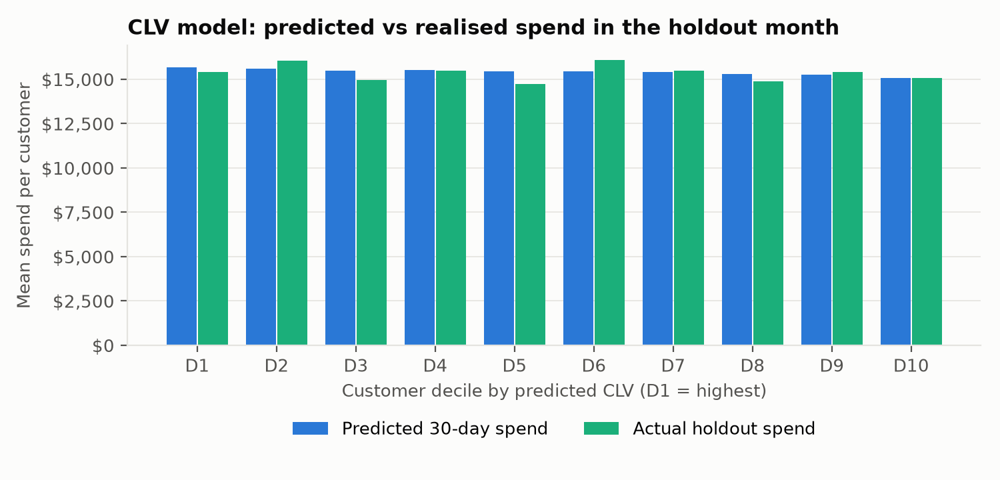
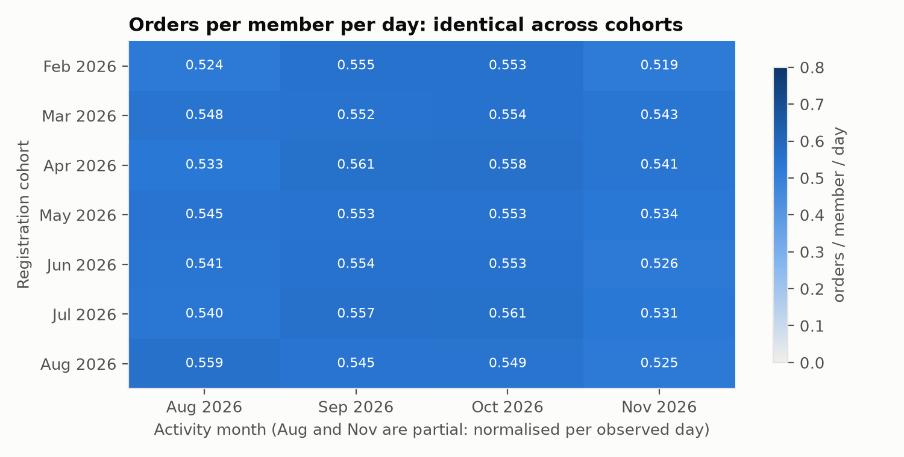

The project builds an analytics system for a synthetic e-commerce platform over 90 days: 10,000 users, 5,000 products in 25 categories, 2,000,000 browsing sessions (20.0M page views) and 500,000 transactions (4.0 GB of JSON). Each technology is given the job its data model is good at:
generator ─► raw JSON ─┬─► MongoDB (catalogue, users+summary, transactions, journeys) ─┐
├─► Spark batch ─► Parquet (545 MB) ─► product×day metrics ─► HBase product_daily
└─► HBase user_activity (all sessions of a 10% user sample) │
Spark integration (CLV, stock-out analysis, cross-store SQL) ◄────────────────┘
Infrastructure ran in Docker (MongoDB 7.0, HBase 2.1 with Thrift) on one laptop (15 cores, 24 GB). The course generator was adapted in one respect: it kept all 2M sessions in a Python list, which needs well over 20 GB of RAM. The adapted version writes each 100k-session chunk as it fills, which produced identical files with a measured peak memory of 1.04 GB (191 s).
Before any analysis, job 01_clean_normalize.py counted rule violations instead of silently fixing them
(output/dq_report.json). Several of these findings shape the conclusions later.
| Check | Result | Consequence |
|---|---|---|
| Session-ID collisions | 2 | IDs are uuid4().hex[:10] (40 bits); the birthday bound predicts ≈1.8 at 2M. The two pairs belong to different users, so the natural key is (session_id, user_id). MongoDB's unique _id rejected both; the HBase row key (which contains user_id) was unaffected. |
| “Converted” sessions with no transaction | 149,276 | Once the 500k transaction target is reached (≈1.25M sessions in), the generator still labels sessions converted. The label overstates conversion: 20.3% labelled vs 12.8% with a recorded order. |
| Orders not linked to any session | 243,389 (48.7%) | These carry 57.6% of revenue ($268.7M of $466.6M) with a higher order value ($1,104 vs $771). Journey-based attribution can explain less than half of revenue. |
| Line items sold at a price ≠ list price valid at sale time | 27.9% | The generator stamps today's price on past sales (net effect +$170,914). Price-elasticity analysis is not possible. |
Products with subcategory_id | 0 of 5,000 | The brief's samples show it; the generator never writes it. Margins are therefore estimated at category level (mean of subcategory margins). |
| Users: non-US country with a US state | 9,952 | Geography is internally inconsistent, so it is used only as a label, never for spatial analysis. |
| Arithmetic: subtotal = Σ items, total = subtotal − discount | 0 violations | Monetary fields are trustworthy. |
| Collection | Design | Justification |
|---|---|---|
categories (25) | Subcategories embedded | Bounded (3–5) and always read with the parent. |
products (5k) | Category id + name copied in (extended reference); price_history embedded | Catalogue pages need the category name without a $lookup; category names rarely change. Price history is bounded (1–3). |
users (10k) | Profile + computed purchase_summary (orders, spend, AOV, first/last purchase) + subset of the 5 latest orders | Built by an aggregation with $merge. Profile pages and segmentation read one document. Embedding all orders would grow without bound (16 MB document limit). |
transactions (500k) | Line items embedded, each with a product-name/category snapshot | An order is created and read atomically. The snapshot also preserves what the customer saw if the catalogue later changes. |
sessions (2M) | Whole journey embedded; cart stored as an array, not a dict keyed by product id | One read = one journey. Field names that are data values cannot be indexed or unwound. |
Indexes follow the queries: {user_id, timestamp:-1} and a multikey items.product_id on transactions;
{user_id, start_time:-1} and start_time on sessions. explain() confirms IXSCAN with
10 keys/10 documents examined for “a user's recent orders” (1 ms). Load rates: transactions 56k docs/s, sessions
≈30k docs/s. WiredTiger compression stored 3.2 GB of session data in 891 MB.
Aggregation pipelines (mongodb/aggregations.py):
P1 monthly revenue by category with each category's top-3 products ($unwind → $group → $sort
→ $group/$push → $slice, 2.2 s, no $lookup thanks to the extended reference).
P2 spend-quintile segmentation from the embedded summary only (17 ms). A first attempt with fixed RFM cut-offs gave
47 / 2,527 / 7,424 / 2 users because every synthetic user orders ≈50 times in 90 days, so $bucketAuto was used
to let the data set the boundaries. The top quintile spends more through both more orders (58 vs 42) and a higher
AOV ($1,007 vs $855). P3 most-viewed vs best-selling products over 30 days. Rewriting the
$lookup from $expr/$in (cannot use the multikey index) to localField/foreignField cut it from
30.9 s to 19.7 s. Profiling showed the remaining 17.8 s is unwinding 664k journeys (6.6M page views). This is the
document model's weak spot: a question across many journeys rather than within one.
| Table | Row key | Column families | Why |
|---|---|---|---|
user_activity | user_id#(9999999999−epoch)#session_id | s summary (9 cells), pv page views (sparse, qualifier = sequence no.), c cart (sparse, qualifier = product_id) | Rows sort lexicographically, so a prefix scan returns a user's sessions newest first and LIMIT n stops early. Each family is its own HStore, so listing sessions reads only s, never the larger pv store. |
product_daily | product_id#yyyymmdd | m counters, dv views by device, rf views by referrer (sparse) | A product's history is one contiguous key range: STARTROW prod#20261101, STOPROW prod#20261201. Zero counters are not stored at all. |
Both tables are pre-split into 5 regions on key boundaries, with ROW bloom filters and VERSIONS=1 (metrics are
recomputed and overwritten by Spark). For user_activity we sampled users, not sessions: all 200,080
sessions (4.0M cells) of every 10th user. Sampling 10% of sessions would leave every user's stream 90% incomplete,
which would make the per-user query wrong for everyone. product_daily holds all 421,769 product-days, loaded
from Spark's output at 25.6k rows/s. Queries (hbase/queries.py, shell equivalents in
queries.hbase):
| Query | HBase mechanism | Rows | ms |
|---|---|---|---|
| Last 5 sessions of user_000420 | prefix scan, family s, LIMIT 5 | 5 | 160 (cold) / 3.5 (warm) |
| Sessions in a 14-day window (range scan) | start/stop rows from reversed timestamps | 26 | 39 |
| One session's click-stream | get, families pv,c | 1 | 41 |
| Converted sessions (value scan) | SingleColumnValueFilter on s:status (server side) | 35 | 176 |
| Mobile sessions of users 100–199 (hybrid) | row range + family + value filter | 674 | 152 |
| One product, one month | range scan on product#yyyymm | 11 | 31 |
Entities that are created, updated and read as a whole (an order, a product, a profile, one journey) go to MongoDB, whose flexible schema and secondary indexes suit them. Append-only event streams, read by key range and time and sparse by nature, go to HBase: its sorted row keys make “latest N” and “between dates” a contiguous read, and absent cells cost nothing. Neither is used for whole-dataset analytics. That belongs to Spark over columnar Parquet. In CAP terms both stores are CP as deployed (single primary / single RegionServer per region). For a shop this is acceptable: a briefly unavailable recommendation panel is better than a wrong stock level.
cart_contents is a dict keyed by product id, it would have produced a struct with
thousands of fields. Declared as MapType it is one column that explode() unpacks. Nested arrays become
normalised tables via posexplode. Timestamps are typed; empty strings become NULL; duplicates are removed on
the composite key. The parsed sessions are persist(MEMORY_AND_DISK)-ed because they feed three writes plus the
quality checks: a branching lineage, which is exactly when caching pays (Lecture 4). Output is Parquet (7.3×
smaller than the JSON), with page_views partitioned by event_date for pruning.pivot() discovery job). The result is bulk-loaded into HBase.flatMap → pairs, reduceByKey, which
combines map-side before the shuffle, unlike groupByKey) and the per-product view counts broadcast. Each pair
gets support, confidence and lift. “Bought together” pairs use a DataFrame self-join with broadcast dimension
tables.lag to show change over time.Engine settings: local[12], 10 GB driver, 48 shuffle partitions (the default 200 would create tiny tasks
at this scale) and Adaptive Query Execution. One pitfall worth recording: passing a naive Python
datetime into a Spark filter silently converted it from the OS zone (UTC+3), shifting a 30-day window by 3 hours.
Bounds are now passed as strings and cast inside Spark.
05_spark_sql.py registers the Parquet tables as views and runs: a device × referrer funnel (CTE with
conditional aggregation); the best product per category (RANK() OVER (PARTITION BY category) plus share of
category); a price-at-time-of-sale audit (non-equi join to price_history with ROW_NUMBER to pick the
price valid at the order timestamp); inter-purchase intervals with LAG (median 1.22 days); and weekly revenue with
an estimated gross profit. For data that “lives” in the operational stores, MongoDB users (with the embedded summary,
10k docs in 0.15 s) and the HBase product_daily series (421k rows in 4.6 s) are loaded into DataFrames,
registered as views, and joined in a single SQL statement (country value × each country's favourite product × that
product's HBase funnel). Reads go through the native drivers with work pushed down to each store. The Mongo-Spark and
HBase-Spark connectors would parallelise these reads across executors, which matters at production scale, but at
these result sizes a driver-side read costs nothing measurable.

output/sql_funnel_device_referrer.csv): channel makes no difference.
Business question. Which customers will be worth most next quarter, and does on-site engagement predict
future spend beyond purchase history? If it does not, a nightly join of 2M sessions to the customer table can be
dropped. Sources. MongoDB transactions (one pushed-down aggregation splits each user's history at a cutoff,
0.46 s); MongoDB users; HBase user_activity, family s only, with a server-side
SingleColumnValueFilter on s:start < cutoff (133,770 rows, 2.6 s; ISO timestamps compare
correctly as bytes); Parquet line items → category-weighted margin per customer. Method. The 90 days are split
into 60 days of calibration and a 30-day holdout. Spark MLlib linear regressions on the 1,000 HBase-sampled users (70/30
user split): M1 = history (frequency, monetary, recency, tenure), M2 = M1 + engagement (sessions, minutes, page views,
converted sessions). CLV(12 m) = predicted 30-day spend × 12 × estimated margin.
| Model | Test R² | Test MAE | RMSE |
|---|---|---|---|
| Naive: next 30 days = ½ × last 60 days | – | $4,357 | – |
| M1 history | −0.010 | $3,523 | $4,305 |
| M2 history + HBase engagement | −0.018 | $3,527 | $4,323 |
Result. Neither model explains future spend (R² ≈ 0; every feature's correlation with holdout spend is
|r| < 0.04). The models beat the naive rule only by predicting the population mean. The top predicted decile
delivered 10.0% of actual holdout spend, exactly what chance gives (Fig. 7b). This is a property of the data, not a
modelling failure: the generator assigns every session and order to random.choice(users), so past behaviour
carries no information about the future. Without the holdout design, the same pipeline would have produced
confident-looking CLV tiers that are pure noise.
Business question. How much revenue was lost to products running out, and which in-stock products under-convert?
Sources. HBase product_daily (views, cart adds, units per product per day); MongoDB
products (stock, active flag, price, category); Spark for joins and per-category medians. The method took three
attempts, and the rejected ones are part of the result:


Result. Estimated revenue lost to stock-outs is $252.5M, an upper bound equal to 52.8% of realised revenue. It assumes a sold-out product would have attracted and converted traffic like its in-stock peers and could have been restocked immediately. Weak conversion among in-stock products costs $7.4M (1.6%). Every category has 41–58% of its products sold out, so the problem is systemic (initial stock is drawn uniformly from 10–1,000 units against ≈500 units of demand per product), not category-specific. Inactive listings received only 322 views in total and do not matter.
The same two questions were run on all three engines (integration/benchmark_engines.py, best warm run;
answers verified identical):

For a point query (one user's latest sessions), MongoDB's B-tree index is fastest (0.3 ms) and HBase's row-key prefix
scan is close behind (3.5 ms). Spark must scan a whole table (138 ms) and is the wrong tool. For an analytical question
over 30 days of all products, Spark with Parquet partition pruning takes 86 ms, while MongoDB must unwind 664k documents
(17.5 s). HBase must full-scan product_daily because its key is product-first (1.9 s). A date-first key would
fix that but would create a write hotspot on “today”. The row key can serve one dominant access pattern well, and ours
serves the per-product history. These measurements are the justification for the architecture: MongoDB for entities,
HBase for keyed time series, Spark for scans and joins.
rand()-keyed shuffle). On a cluster, the JSON → Parquet step would read from HDFS/S3, with
partitions sized at about 128 MB.transactions and sessions on hashed user_id. That gives even
distribution, and per-user queries still target one shard. A ranged key on time would favour time-window analytics
but hotspot inserts. The cross-journey aggregation (P3) does not scale on any shard key and belongs in Spark.hash(user)%N) would be added. Enabling Snappy/ZSTD compression
(not available in this image) would cut the 184 MB per 200k sessions by roughly 3–4×.


product_daily).
purchase_summary current; the Mongo/HBase Spark connectors;
BG/NBD + Gamma-Gamma CLV on real data; collaborative filtering (ALS), but only after a lift-vs-null test shows there is
signal to learn.Reproducibility. ./run_all.sh rebuilds everything
(≈15 min). Session and transaction IDs use unseeded uuid4, so IDs differ between runs; all other values are seeded.
Every figure and number in this report comes from the files in output/ and logs/ of the repository.
Use of AI assistance. An AI assistant (Claude, Anthropic) was used to help write and debug the code and to draft this report. All code was executed on the author's machine, and every result was produced by those runs and checked against the output files.